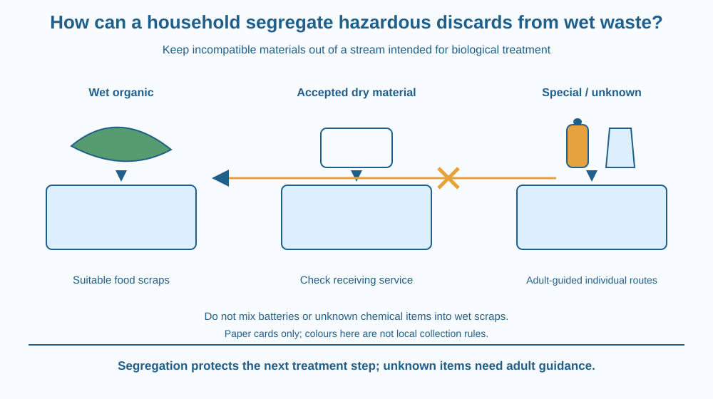

Explain why some household discards must stay out of wet organic waste. Use material compatibility and contamination pathways to design a paper sorting guide. Separate ordinary dry recyclables from items needing a suitable special collection route, without assuming universal bin colours or handling hazardous objects.
A fruit peel and a used battery may both be unwanted at home, yet putting them into the same wet-waste container creates a different problem from storing them separately. The shared word waste does not mean the materials have compatible next steps.
Organic material may be intended for a biological treatment route. A battery or a chemical-containing container has different components and handling needs. Mixing can spoil the suitability of the whole stream.
The science question is how segregation preserves a safe, usable pathway for materials rather than merely making several neat-looking bins.
Segregation at source means keeping appropriate waste categories separate where discards arise. For this paper model, use three broad routes: wet organic material, ordinary dry recyclables accepted by a relevant service, and items needing suitable special collection or advice.
Wet food scraps contain water and biodegradable organic material. In a suitable managed process, microorganisms can transform this material. The intended pathway depends on the feed being appropriate, not merely on its looking natural or being soft.
A battery contains chemically active materials and components that do not belong in a food-scrap treatment stream. Damage or unsuitable handling can create leakage, short-circuit or fire risks depending on the battery type. A battery being small does not make it compatible with wet organic material.
Discarded chemical-containing products or their containers can also introduce unwanted substances. The hazard depends on the actual product and residues. An apparently empty container is not automatically suitable for a child to rinse, open, sniff or reuse.
Contamination means that an unwanted material enters a stream and reduces its suitability or creates risk. Mixing a problem item into a larger amount of otherwise appropriate material does not make the problem disappear. It can spread the handling difficulty to more material.
Keeping ordinary dry paper or packaging separate can help an appropriate recycling route, but acceptance depends on material, cleanliness and the receiving system. A recycling symbol alone does not prove that every local service can accept an item in its current condition.
Special discards are not one chemically interchangeable group. Used batteries, some electronics, lamps and chemical-containing products can need different routes. The diagram groups them only as items requiring further identification and suitable arrangements, not as permission to mix them together in one improvised box.
For an unknown item, the useful decision is pause and ask a responsible adult to identify a suitable route. Guessing from colour or shape is weak evidence. Never open, puncture, burn, dismantle or mix unfamiliar discards to find out what they contain.
The lesson deliberately assigns no national bin-colour rule or current local collection address. Real instructions should come from the relevant service and responsible adults. The stable scientific idea is compatibility: preserve the intended treatment route by preventing unsuitable materials from entering it.
Draw a branching map with a material-identification point before any container. Use item cards labelled fruit peel, clean dry paper, used battery and unknown chemical container.
Route the peel to the appropriate wet-organic example and the paper to a conditional accepted-dry-material route. Send the other cards to adult identification and suitable special arrangements, keeping their individual needs visible.
Add an arrow showing what goes wrong if the battery card enters the wet-organic stream. The consequence is a changed material mixture and handling problem, not simply a lost mark for untidy sorting. Segregation protects what happens next.
The SVG shows illustrated item cards approaching a decision point. Separate arrows lead toward an organic route, a conditional dry-recycling route and a special-identification route.
A crossed mixing arrow keeps battery and unknown chemical symbols out of the organic pathway. Separate labels state that special items need appropriate individual arrangements rather than a common mixed container.
No colour is assigned legal meaning. The graphic describes material compatibility, not a current municipal rule, collection promise or instruction for children to handle actual discards. All activity items are drawn cards.

Homes and schools in India produce mixtures of food scraps, packaging and occasional special discards. A useful sorting conversation begins with what each receiving route can handle, rather than assuming every unwanted item belongs with the nearest pile.
A school could ask responsible adults to obtain the relevant collection guidance and turn it into a clear local chart. That chart would need updating when the service or accepted categories change. The classroom mechanism alone cannot supply those local details.
Students should not search bins, collect used batteries, open old electronics or examine chemical residues. Adults can provide written item descriptions. Paper examples reveal the contamination pathway without creating the handling risk the lesson is trying to prevent.
Use paper and a pencil. Do not gather real waste.
Keep the special-item cards individually identified. Do not treat the third route as an instruction to place every special item together physically. Your output is a decision guide for discussion with adults, not a waste-handling task.
Why can one incompatible item make a larger otherwise suitable stream more difficult to treat? Explain what has changed in the mixture rather than saying the container has become untidy.
Now imagine packaging made from several joined materials. What information would help determine its next route? The answer should involve the receiving system and material identification, not a rule that students must pull unknown objects apart to investigate them.
Which item should stay out of the wet-organic model stream?
Answer: A — A battery has components and handling needs incompatible with the food-scrap pathway.
Why does source segregation help the next treatment step?
Answer: B — Keeping incompatible materials apart preserves a stream's suitability for its intended route.
A child sees an unknown chemical-product container. What is the useful next step?
Answer: C — An unknown item needs appropriate identification and handling rather than child investigation.
Design a household paper sorting chart with four example cards, a question point for uncertainty and a space for adult-confirmed local guidance. Explain one contamination pathway in detail.
Your chart must keep used batteries out of wet organic waste and avoid a universal colour code. Include a clear instruction that children use descriptions rather than collect or dismantle actual discards. A useful chart preserves suitable next steps while showing where further information is needed.
Sorting can protect the value of the material already collected. A peel may be suitable for one process before mixing, then become part of a problematic mixture after an incompatible addition. Preventing contamination early can matter more than trying to separate a complex mixture later.
Keep incompatible discards out of wet organic waste; identify materials, preserve suitable treatment routes and use responsible adult guidance for special or unknown items.